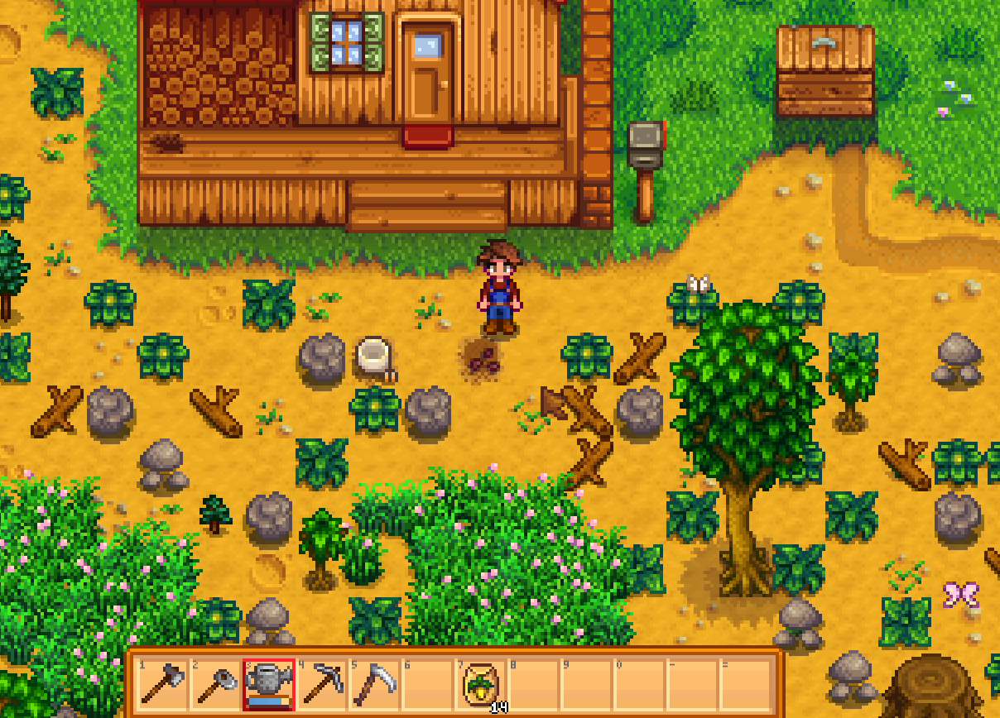
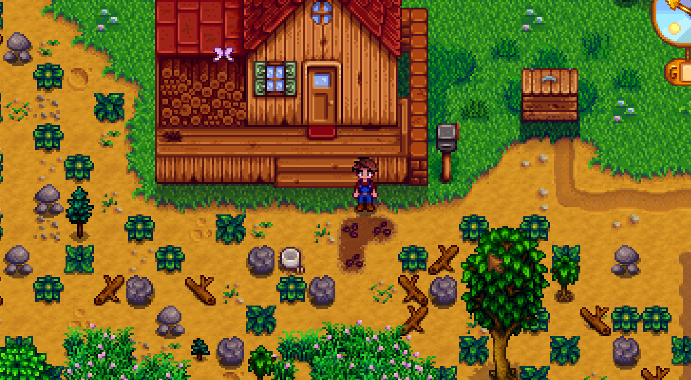

Quick answers (read this first)
- Plant a small crop patch you can water every day—do not clear the whole farm in week one.
- Spend early money on seeds + backpack space before cosmetics or impulse “cool” buys.
- Enter the mines only after morning chores feel automatic—not when your energy bar is already empty.
- Open the Community Center early, but do not force every Spring bundle before Summer.
- If something creates FOMO, check Safe to skip and move on.
Who this is for (and who should skip)
Use this if you just got to Pelican Town, the wiki feels huge, and you want a chill Year 1—not a spreadsheet Spring.
Skip this if you already speedrun or chase perfection. We care more about finishing watering than looking “optimal.”
Version note: Written for Stardew Valley 1.6-era QoL. We teach spend and chore priorities, not a frozen gold spreadsheet—always confirm seed prices in Pierre’s menu.
From our Year 1 save (real pitfalls):
- On Windows, a Chinese IME can dump garbled text into the game and block movement—switch to English input before you play.
- Pierre’s is closed on Wednesdays. Standing at the door overnight wastes a trip.
- We cleared only a small porch patch first. Trying to axe the whole farm day 1 emptied energy before watering was done.
Pros & cons of this “calm Spring” plan
| Details | |
|---|---|
| Pros | Low stress; protects energy for watering; reduces restart urge; works even if you play short sessions. |
| Cons | Slower than min-max crop spreadsheets; you will not look like a Year 3 showcase farm by day 10. |
| Use when | First playthrough, cozy pace, or you keep burning out clearing the whole farm. |
| Skip when | You already know Community Center routes and want a speed / perfection challenge. |
Spring goals (keep the list short)
- Build a crop loop you can finish before noon without panic.
- Get basic storage (chest) and inventory relief (backpack) before decorating.
- Touch the Community Center so you know what to keep.
- Make the mines a “leftover energy” activity, not your whole day.
- End Spring with seed money and a routine—not a burned-out restart urge.
Interactive Spring checklist
Tick as you play. Session-only checkboxes—refresh clears them.
Safe to skip in Spring (anti-FOMO)
- Finishing every Community Center bundle before Summer.
- Maxing friendship with the whole town.
- Designing a giant farm layout before you have sprinklers.
- Buying every tool upgrade on sight—upgrade the tool that removes daily pain first.
- Restarting because one festival or one missed forage item “ruined” the run.
- Copying a YouTuber’s huge crop field on day 5. If you cannot water it, it is not a plan—it is a trap.
Early spend: backpack vs tool upgrade
Priority comparison only—no fabricated profit spreadsheets. Pick the option that removes your biggest daily frustration.
| Choice | Choose this when… | Wait when… |
|---|---|---|
| Backpack upgrade first | Inventory fills before noon; you keep dropping forage or ore. | You already have space and watering is the real bottleneck. |
| Watering can upgrade first | Your patch is growing and mornings feel like a chore treadmill. | You only planted a tiny starter patch and still need seed money. |
| Pickaxe / axe upgrade | You enter the mines regularly or need to clear big farm obstacles. | You still have not locked a daily crop loop. |
Crops: a calm starter approach
You do not need the “best gold-per-day” chart on week one. You need plants you will actually water.
| Approach | Why it helps beginners | Watch out for |
|---|---|---|
| Free Parsnips + small paid patch | Teaches the water → harvest → replant loop with low risk. | Spending all gold on seeds and skipping backpack / food. |
| Mix quick crops + one slower crop | Quick crops keep cash flowing; slower crops teach patience. | Planting only long crops, then feeling broke mid-season. |
| Keep a few quality crops | Useful for Community Center turn-ins later. | Hoarding everything and never selling—backpack meltdown. |
Spring seed priority (check prices in-game)
Do not memorize a YouTube “best crop” list on day 1. Use this order, then confirm costs at Pierre’s counter.
| Priority | What | Why on our save |
|---|---|---|
| 1 | Free Parsnip packet from the starter gift | Zero gold risk; teaches the water-every-day loop |
| 2 | A few more quick Spring seeds (e.g. Potato) | Refills the same small patch after harvest |
| 3 | One slower crop only if mornings still feel easy | Cauliflower-style waits hurt if you overplant |
| Skip early | Giant fields / every seed in the shop | We ran out of can water and energy before noon |
New player warning: Do not plant a long crop on the last days of Spring expecting it to finish in Summer. Seasonal crops die at the season change—verify growth days in the seed tooltip before you buy.
Real screenshots from our Year 1 save
Numbered 1→4 by capture time. No AI art. Pierre visit also on the Early money page.

Game screenshot © ConcernedApe — used for guide commentary

Game screenshot © ConcernedApe — used for guide commentary

Game screenshot © ConcernedApe — used for guide commentary

Game screenshot © ConcernedApe — used for guide commentary
A simple daily loop
- Optional: check TV for weather / luck if you like planning rainy fishing days.
- Water crops → pet animals once you have them → grab what you need from the chest.
- Walk to town with empty slots for forage.
- Spend leftover energy on either fishing or one mine trip—until you know your limits.
- Sleep with enough energy for tomorrow’s watering. Exhaustion spirals ruin Spring more than “wrong crops.”
Light week-by-week rhythm
| When | Focus | Ignore for now |
|---|---|---|
| Days 1–5 | Parsnips, tiny paid patch, chest, learn watering. | Giant farm clear, deep mines pushes. |
| Days 6–14 | Stable morning loop, Pierre restocks, Community Center visit. | Town-wide gift routes. |
| Mid Spring | Backpack or watering quality-of-life; rainy fishing; short mine trips. | Cosmetic buildings and impulse furniture. |
| Late Spring | Bank Summer seed money; clean inventory; optional festival fun. | Restarting over missed forage. |
Three Spring playstyles
Spring does not have one “correct” personality. On our save we bounced between moods depending on the weather and how long we played that night. These three styles share the same rule: water first, then spend leftover energy on one focus. Pick the style that matches your patience—not a YouTube title.
Aggressive clearer. Mornings: water the small patch, then clear a little more farm than yesterday—paths, a second chest spot, maybe a rectangle for next week’s seeds. Afternoons: short mine trips or wood/stone hauls if energy remains. Who should pick this: players who feel claustrophobic on a debris-packed farm and who already finish watering without panic. Pitfall we hit: clearing until the bar was empty, then “forgetting” to leave stamina for Pierre or a rainy fishing hour. If you choose this style, set a hard stop—when the watering can is done and one clearing goal is done, switch activities.
Steady farmer. Mornings: water, harvest, replant the same footprint, chest tidy, maybe one forage loop on the walk to town. Afternoons: sell/ship, buy only what refills the patch, talk to a villager if you pass them, sleep early enough that tomorrow’s can is not exhausted. Who should pick this: first playthroughs, short weekday sessions, anyone who restarts after burning out. This is the default Valley First Year plan. It looks “small” on day 10 and feels solvent by late Spring. Pair it with the early money spend ladder so gold does not vanish on cosmetics.
Rainy fisher. Mornings: still water (rain helps the crops, not your schedule discipline—check the patch anyway). Afternoons on wet days: fish with leftover energy instead of forcing mines. Dry days: light forage or a gentle mine floor, not a double shift. Who should pick this: players who find combat stressful, or who want fishing skill without treating it like a job every sunny morning. Pitfall: selling every fish including ones you might want for the Fish Tank later—park “maybe bundle” catches in a chest the way we describe in the Community Center guide.
You can change styles mid-season. We started as steady farmers, cleared aggressively for two evenings, then became rainy fishers when Spring storms lined up. The only wrong pick is the style that empties your energy before watering is guaranteed.
Our Year 1 Spring save log
This is not a speedrun timeline. It is what actually happened on our Year 1 farm—useful because guides that only say “do the optimal thing” skip the day you waste walking to a closed shop.
Week 1 (about days 1–7). Patch size stayed tiny: free Parsnips plus a handful of paid tiles we could finish watering before late morning. We crafted a chest by the porch so forage stopped eating hotbar slots. We did not buy the backpack yet—gold went to a modest seed refill after the first harvest. Community Center: we walked in once, read the Junimo note, and left without forcing turn-ins. Mistake that cost us a day: treating Wednesday like any other Pierre day. We hiked to town with seed money, found the shop closed, wandered, and slept late with a half-empty plan. Lesson: check the calendar / habit that Pierre skips Wednesdays before you spend the afternoon on a shopping fantasy.
Week 2 (about days 8–14). Same footprint, slightly more reliable mornings. We finally bought the first backpack upgrade after inventory filled before noon two days in a row—on our save that felt more urgent than a tool upgrade. Mines: we started after watering felt automatic, not on day 2 with an empty bar. We still left most of the farm uncleared; screenshots on this page match that porch debris look. Egg Festival week: we showed up for fun and did not restart over prizes.
Mid to late Spring. Salmonberry bushes became snack insurance for mine/fish days. We kept a few quality crops and Spring forage in the bundles chest instead of shipping everything—see what to keep for bundles. Rainy afternoons leaned fishing. Late Spring gold was protected for Summer seeds rather than Vault FOMO or cart curiosities. Gifting stayed light: talk on errand days, birthdays if we noticed mail—details in gifting basics.
If your week numbers land differently, that is fine. The exclusive value here is the pattern: small patch → backpack when inventory hurts → mines as leftover energy → one concrete mistake (closed shop day) that taught us schedule awareness. Your prices and luck will vary; treat our gold moments as examples, not guarantees.
Community Center in Spring: light touch
Open it early so you recognize bundle ingredients when they drop into your inventory. Turn in easy Spring forage or crop pieces when you already have them.
Do not freeze your whole economy trying to force every slot. For room order and FOMO rules, open the full Community Center priorities guide.
Alternative variations (same season, different comfort)
- Fishing-leaning Spring: Keep the crop patch tiny. On rainy days, fish with leftover energy. Trade-off: the farm looks smaller, but fishing feels less scary sooner.
- Mines-leaning Spring: Still water first, then spend leftover bars on early floors for ore and combat practice. Trade-off: less foraging / festival FOMO, more snack management.
- Budget / short-session Spring: Free Parsnips plus one paid seed type. Skip tool upgrades until the backpack or watering can actually hurts. Trade-off: slower gold, way less stress.
Pick the version that matches how long you play on a real weekday night.
Five beginner mistakes that make Spring miserable
- Clearing half the farm, then being too tired to water what you planted.
- Spending every coin the day you earn it, then having no Summer seed budget.
- Entering the mines on empty energy and calling the game “too hard.”
- Keeping every item “for later” until you cannot pick up a crop harvest.
- Comparing your day 10 farm to someone’s edited Year 3 showcase.
FAQ
Should I clear the whole farm in Spring?
No. Clear what you will plant and a path to your door. Big clearing burns the energy you need for watering, fishing, and the mines.
Is it bad if I miss Egg Festival rewards?
No. Treat Year 1 festivals as optional fun. Missing one prize is not a reason to restart.
When should I enter the mines?
After morning watering is routine and you can leave the farm with leftover energy. Going on day 2 with an empty bar usually teaches panic, not progress.
Potato or Cauliflower—does it matter?
Less than consistency. A watered “okay” crop beats an optimized crop you forget to water. Mix a little of both if you want cash flow plus a longer grow lesson.
Should I gift villagers every day in Spring?
Not required. Say hi when you are in town. Heavy gifting routes can wait until your farm mornings are stable.
Next steps / related pages
Unofficial fan guide. Stardew Valley is a trademark of ConcernedApe. Valley First Year is not affiliated with the official game.